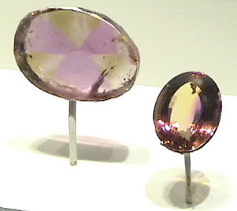

|
Quartz is silicon dioxide, SiO2. Quartz is abundant in the Earth's crust, being the chemically simplest form of the silicates. All the samples here are displayed in the Smithsonian Museum of Natural History. Ametrine quartz is one of the noted varieties of quartz, and is often of gem quality. The gem at right is 138.7 carats from Anahi mine, Santa Cruz, Bolivia. The sample beside it is is about 3x2.5 cm in size. |  |